日期：2026-11-16；对象：众墅之家 V3 微信小程序业务员端。
本轮已在微信开发者工具使用真实业务员账号检查首页、创作、方案、客户、我的及主要可访问子页面，保存原生截图与接口回执。业务端可以进入主要入口，但尚不能认定全业务闭环通过。最需要处理的是：Tab 切换中间白屏、无预算客户进入委托后没有下一步、已完成视频任务没有播放地址，以及消息中心尚未验证业务通知产出。
用户追加的“建筑风格胶囊改为左右滑动”已修改：灵感库与 AI 立面均采用单行横向 scroll-view，保留选择与筛选行为；灵感库已滑到末端“法式”并点击验证。当前未上传微信、未发布体验版。
- 使用官方 miniprogram-automator 连接真实微信开发者工具；主流程入口、客户筛选、跟进弹层、委托入口、方案配置及三组底部 Tab 使用实际 Element.tap。扩展子页面使用路由直达检查，不计为逐控件验收通过。
- 工具版本 2.02.2608080，基础库 3.17.4。源码副本为 .tools/business-ux-audit-20261116，修复同步回主项目相关 WXML、SCSS 和 WXSS。
- 使用本轮截图。00-initial 是定位时的工程页，01-reopened 是登录页，04-design 保留了切换旧画面，23-profile 路由不符，均不作为目标页面稳定状态证据。个人页以 40-profile-verified 为准。
- 原始 PNG 共 63 张，含切换采样、重复核查和不采纳截图；数量不等于独立页面数。
- 未点击真实提交客户、保存跟进、AI生成、扣积分、发布、收付款、设计移交或工程接收。快速预算进入时会读取草稿，源码在无草稿时有自动新建草稿逻辑；本轮页面存在草稿，未执行保存或测算。
- 当前客户尚无预算与委托上下文，不能在只读范围内连续验证设计完成、财务到账、成果下发和工程接收。以下流程说明来自当前源码；未完成环节明确列为待验收。
- 扩展巡检监听期间没有捕获 console/exception 事件；这只说明该监听区间的结果，不证明所有页面、网络或设备无错误。数字人口播出现了缺少已就绪资源的业务提示。
- 工具曾出现 simulator launch failed；完整重启后恢复。SDK超时和工具重启不计入业务代码错误。
1. 内容获客：业务员从创作入口粘贴链接提取文案，或手动填写 → 文案二创 → 人物库选择定位 → 准备同一人物的数字分身和克隆声音 → 数字人口播/AI视频 → 任务中心 → 视频结果 → 我的作品 → 手动发布登记 → 发布记录。提取、生成、失败重试、结果不确定、保存失败应分别处理；不能让用户通过重复生成找回既有成果。
2. 登记客户：手动登记姓名、联系方式、行政区、来源和需求摘要 → 客户列表。列表有今日待跟进、预约到店、全部、已到店四个筛选，以及搜索和查看更多。客户资料编辑是独立子流程。
3. 客户跟进：客户工作区概况 → 跟进 → 首次/后续沟通记录、下次回访日期 → 预约及确认到店。回访计数、首页待办和客户列表应来自同一后端事实。当前账号的客户没有跟进记录，本轮只打开表单，未提交。
4. 方案准备：灵感库按公司/AI来源、建筑风格、层数、尺寸筛选 → 户型详情、立面与各层图纸 → 用此户型设计。平面设计与立面设计分别配置条件、需求、清晰度、方向、数量和报价 → 生成 → 结果选择/保存。生成需明确积分消耗，结果尚未产生时不能当作已完成。
5. 参考预算：快速预算选择草稿或导入参数 → 地区、尺寸、层数、面积、工程量、主体/外装配置及当地单价 → 保存草稿/测算 → 结果、缺项提示、报价/历史 → 关联客户。预算完整与不完整结果应区别展示，不能把已定价小计当最终总价。
6. 设计委托：业务员在客户内补齐有效预算 → 获取授权设计费与交付范围 → 提交设计委托。费用例外进入老板审批，退回后修改重提。当前无预算场景出现无按钮断点。
7. 设计协作与资金接续：总部设计处理委托、修改意见、设计完成；按当前授权与实收规则由财务登记到账，再由有权限岗位上传/下发成果。历史首尾款与新版规则需分别验收；不能套用 README 里的历史模拟支付流程。
8. 成果与工程移交：业务员核对本版成果、施工图、审核依据和客户确认资料，选择有效工程接收人 → 提交移交 → 工程确认接收或退回补充 → 在同一项目继续施工、材料、收付款和交付。接收、版本、收件人均需使用后端权限校验。当前账号没有可走到此阶段的记录，未实测通过。
9. 辅助闭环：我的 → 消息、本人绩效、培训资料、组织身份、隐私与帮助。消息应能回到原业务单，读取失败与真实空列表必须有不同状态。
| 编号 | 优先级 | 证据与复现 | 影响及建议 |
| F01 | P1 | tab-creation-profile-0.png 是仅余系统状态栏的空白画面，后续1—4帧恢复个人页；由创作底栏实际点击“我的”触发 | 已捕获切换中间白屏，但未获得持续时长，不能推断真机发生率。检查原生Tab与分包页混合导航的销毁/挂载时序；优先统一持久导航壳或把业务五页纳入一致的Tab容器。保留原生切换时也需统一背景、同步底栏和内容首屏，不应通过额外延时掩盖。 |
| F02 | P2 | 方案→客户首帧保留旧方案；客户→创作前两帧保留客户画面。tab-contact-sheet.jpg | 目标页准备期间旧内容短暂残留。与F01一起排查导航完成、首屏绘制及底栏选中态。截图采样带工具开销，不能把截图间隔当用户延迟。 |
| F03 | P1 | 客户跟进→委托设计，12-commission-entry.png；commission-blocker.json：无预算、无费用报价、allowedActions=[]，primary为空、budgetCard=false，姓名为空且error为空 | 权限结果使补预算入口也一起消失。无预算时独立显示“先完成参考预算”；无权提交时显示具体原因；客户摘要从后端客户上下文补齐。不得为了出现按钮绕过allowedActions或伪造费用。 |
| F04 | P1 | 任务中心选择已完成任务→41-task-result.png；task-result-check.json：completed、apiTask=true、hasResultUrl=false | “生成完成”与可交付成果不一致，页面仍显示保存/去发布。先获取或刷新成果下载票据；失败显示“成果暂不可读取”和重试，限制保存发布；不可诱导再次扣点生成。需核对后端任务成果字段、资产状态及票据有效期。 |
| F05 | P1 | 消息GET列表、未读数均HTTP200/code0，返回0；见消息专项 | 后端读侧存在，但本轮无真实业务通知送达证据。核对各业务域事件→接收人→消息持久化→列表→原单跳转完整链路。 |
| F06 | P1 | pages/account/index.js 的 syncApiMessages/readApi/readAll 和个人页未读加载使用空catch | 消息加载或已读失败可能显示成空列表/保留旧数，控制台也不暴露。增加loading/ready/empty/error，明确重试；已读以后端结果更新；记录可脱敏追踪码。 |
| F07 | P1 | API消息点击仍经旧本地 B.customer(objectId) 检查，找不到则提示“关联内容开放后可跳转” | 后端真实客户ID可能被本地模型误拦。按消息类型映射API路由并由目标页鉴权；原单无权、已删除、历史版本各给对应提示，不使用离线客户存在性作为门禁。尚无非空真实消息可点击复验。 |
| F08 | P2 | 消息只取limit=50；后端支持beforeId；前端未接续游标 | 超过50条的历史消息不可完整浏览。补分页、加载更多及服务端分类过滤，避免前端筛选最新50条误称“暂无此类消息”。 |
| F09 | P2 | 07-customers-appointments.png及已到店空态 | 把数据口径说明直接塞进空状态，阅读负担大。改为一句状态+一个下一步；规则说明放帮助或首次引导。 |
| F10 | P2 | 10-customer-follow.png | “跟进”Tab仍重复完整客户资料卡，业务办理与沟通记录位于下方。保留紧凑客户摘要，跟进页聚焦记录、回访和办理入口，资料留概况。 |
| F11 | P2 | 17-case-detail.png和18-case-drawings.png | 顶部大立面与当前“立面效果”再次展示同图，重复占用首屏。改为单一图纸预览区+图纸Tab，元数据紧随其后；保留放大与全图比例。另需核对30㎡与面宽17.8m/进深13m的面积口径，当前只能标为待核数据疑点。 |
| F12 | P2 | 28-help.png | 页面明确写反馈服务未开通，却仍展示长反馈表单。关闭提交入口或直接提供明确的联系门店入口；不让用户填写完才发现不能提交。 |
| F13 | P2 | 40-profile-verified.png提示当前岗位暂无课程，26-learning.png却显示课程 | 培训入口摘要与课程中心存在显示不一致。对照同岗位、请求完成时间与课程过滤规则复测；共享课程可见性与加载错误状态。暂不判定后端课程缺失。 |
| F14 | 已修复 | 风格原多行→20-style-horizontal.png、21-style-scrolled.png、22-style-selection.png、39-ai-style.png | 灵感库及AI立面建筑风格已横向滚动；原生图可见单行，滑至法式并筛选成功。 |
custom-tab-bar/index.js 同时使用 switchTab、navigateTo 和 nested redirectTo，三类页面生命周期不同，后者会销毁页面。当前没有统一的导航进行中锁，也没有为非原生Tab保存查询、筛选和滚动位置的统一策略。代码结构是排查方向，不等同于已证明的唯一白屏根因。
建议先补可观测性：按一次点击记录来源、目标、调用方式、onLoad/onShow、首屏完成、导航失败；再决定持久业务容器或独立业务Tab方案。切换完成后才确认选中态，失败恢复；重复点击同目标合并。缓存按用户、组织、岗位隔离，并明确失效与刷新机制，避免为了不闪而显示上一账号的数据。
验收：五页往返至少20轮；每对相邻Tab双向、同Tab重复点击、连续快速点三页、慢网、数据失败、后台返回、切换岗位均覆盖。录屏与页面栈同时采集；不得出现无内容/无导航帧、选中态错页、无限叠栈或返回旧身份。iOS与Android真机另验，当前没有真机结论。
有后端基础支持，当前读接口正常，但没有验证到业务消息正常输出。
本轮真实接口回执：
| 接口 | 结果 |
| GET /platform/messages?limit=50 | HTTP 200，code=0，列表0条 |
| GET /platform/messages/unread-count | HTTP 200，code=0，count=0 |
| 业务/学习/系统/全部分类 | 实际点击后均0条，apiUnread=0 |
后端 platform-workflow 中有 PlatformMessageController、PlatformMessageService、MessageSender、MessageStore/DbMessageStore 与 pf_message；支持按登录人读消息、实时未读数、单条及全部已读，发送器支持去重键。
本地后端主代码搜索中，平台 MessageSender 的直接业务调用除开发 MessageDevController 种子入口外未找到正式业务域调用。该结果提示消息生产接线缺口，但不是线上数据库与部署版本的完整审计；不能仅由空列表断言线上所有消息均失效。其他模块的独立消息服务也不自动等于已接入 /platform/messages。
修复方案：
1. 建立事件矩阵：客户分配/改派、回访提醒、设计退回/完成/下发、移交提交/接收/退回、绩效任务、课程开放。每项明确事件、原单ID/版本、组织、接收人和去重键。
2. 在业务事务提交后可靠发送，关键事件使用outbox及重试，按事件ID+接收人去重；不要靠页面打开时在客户端补造消息。
3. 前端统一后端消息路由和原单鉴权；补分页、失败态、未读刷新及已读确认。
4. 在隔离环境触发一条真实业务事件，核对数据库消息、收件人、未读+1、列表内容、点击原单、已读-1、重复事件不增发、切组织不越权，形成闭环证据。本轮未伪造或发送测试消息到真实用户。
5. 小程序站内消息与微信订阅通知分开验收；本轮只核查站内消息读侧，不代表微信通知已接入。
| 位置 | 当前表现 | 建议 |
| 客户预约空态 | “暂无预约到店的客户（到店状态以客户「已到店」标记为准，需先在跟进中登记预约并确认到店）” | 改为“暂无预约到店客户”；必要时加“去记录预约”入口，口径放帮助。 |
| 已到店空态 | 长括号解释自动标记规则 | 保留“暂无已到店客户”，去掉括号。 |
| 创作首页 | 视频创作、爆款二创、爆款文案二创及参考视频改写连续叠加 | 保留模式名与当前输入标题；说明缩为“粘贴视频链接，提取后改写”。 |
| 手动文案入口 | “没有链接？手动写文案” | 改“手动写文案”。 |
| 最近创作空态 | “开始创作后，草稿和作品会保存在这里。” | 改“暂无最近创作”，已有清晰创作入口即可。 |
| 客户工作区 | 独立一行“办理身份：业务员”与用户自身身份信息重复 | 普通业务员场景可移除；仅多岗位、代办或只读风险场景保留醒目标识。 |
| 客户跟进页 | 完整客户资料重复概况 | 精简为姓名、阶段和下一次回访摘要。 |
| AI建筑风格/图纸类型 | 选中项已有高亮和勾选，另有“已选：…” | 可删除重复“已选”说明；横滑后如果选中项可能离屏，可保留紧凑选择摘要，需结合最终交互决定。 |
| AI生成设置 | 单价、本次费用、余额均出现 | 保留本次费用和余额；单价按需放详情。不可删除扣点确认与失败退款说明。 |
| 消息页底部 | “仅展示与你相关的消息·状态随业务进度自动更新” | 建议删除；在未验证自动通知闭环前也避免作过强承诺。 |
| 消息空列表 | “暂无此类消息”仍显示“全部已读” | 空列表隐藏或禁用全部已读；真实失败显示错误而非空态。 |
| 视频结果 | “去发布前将先保存作品” | 可并入按钮“保存并去发布”，先修复无成果时按钮仍可见的问题。 |
| 委托费用说明 | “费用按授权规则执行；到账登记由财务在财务工作台办理” | 业务端缩为“设计费以当前授权报价为准”；财务办理说明放进度/详情。不以说明文字代替实际金额与下一步。 |
| 帮助反馈 | 服务未开通提示+完整反馈表单同时存在 | 保留简短未开通说明和联系入口，隐藏无效表单。 |
| 户型详情 | 同一立面图连续展示两次 | 删除重复图块，信息说明跟随同一个预览区。 |
保留必要的单位、选填标识、积分价格、授权确认、缺失资料、权限原因、错误恢复和隐私提示。文案优化不应删除关键业务约束。
稳定页面、子状态与操作证据索引见 coverage.csv 和 HTML 报告的截图附录。可访问的主要读侧已检查；以下不得标记为通过：
- 无预算客户的委托补齐与提交：被F03阻断。
- 数字人口播真正生成：同一人物缺少已就绪分身和声音，页面已明确提示；未提交付费任务。
- 视频成果保存与发布：已完成任务没有播放地址，F04未修复；未创建发布登记。
- 财务到账、设计成果下发、客户确认、工程移交与接收：当前客户无相应阶段数据，未实施真实写操作。
- 非空真实消息展示、原单跳转和已读闭环：当前列表为空，未发送消息或更改已读状态。
- 快速连点、弱网、前后台、真机高帧率复测：本轮未完成，不可用三组模拟器切换采样替代。
第一批：闭环和可用性。 修复F03委托缺条件引导及客户摘要；修复F04成果读取与按钮门禁；为消息加载补可见错误态并确认消息事件生产接线。每项提供成功、无权、数据缺失和网络失败证据。
第二批：Tab稳定性。 在统一导航策略下解决F01/F02，补导航合并、失败回退和状态保留。用慢网与20轮往返录屏验证，不使用延长加载动画作为“修复完成”的依据。
第三批：信息精简。 按上述文案表逐项改写，去掉重复卡片和无效表单，统一个人页与课程中心口径。完成窄屏、长文字、滚动底栏遮挡检查。
第四批：跨岗位闭环。 在明确隔离的数据环境准备同一客户/项目，业务、老板、总部设计、财务、工程按当前后端状态接续，包含退回、重提、版本变更、重复提交和通知去重。验收资料记录源码版本、后端版本、原单ID、截图、请求结果与未完成项。
本轮仅按用户明确追加要求修改两处建筑风格横滑：design-migration/pages/library/index 与 design-migration/pages/ai-design/index 的 WXML、SCSS、WXSS。保持数据事件和筛选键，未改业务权限或接口。git diff --check 对这六个文件通过；隔离原生工程编译运行、横滑和末端筛选已验证。其余优化为方案，尚未实施。工作区原有其他未提交修改未归入本轮成果。
第三行第一帧是切到个人页时捕获的白屏；采样时序不能换算为真机帧率。
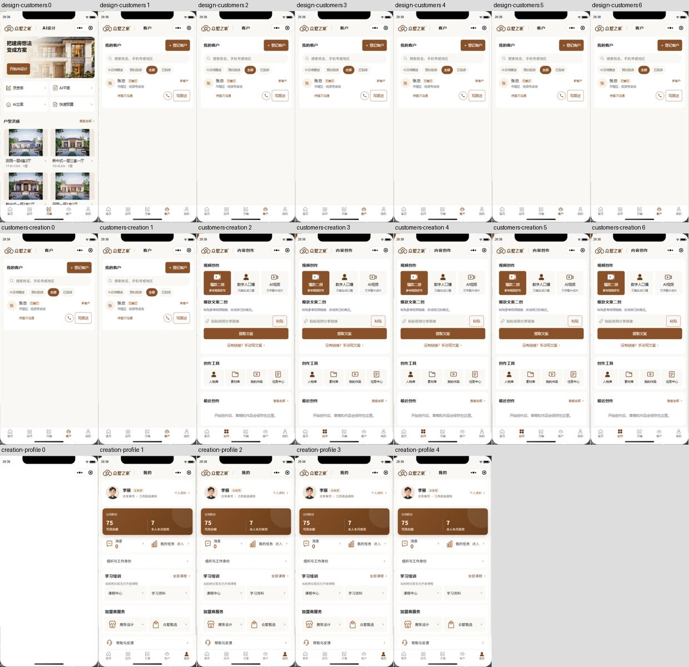
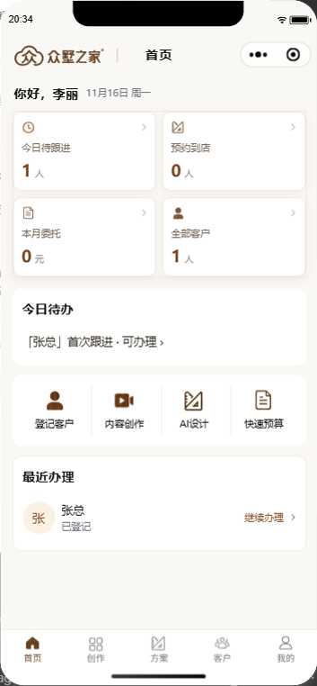
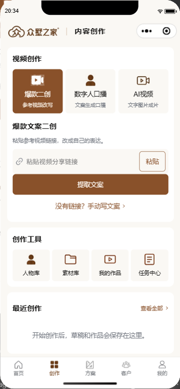
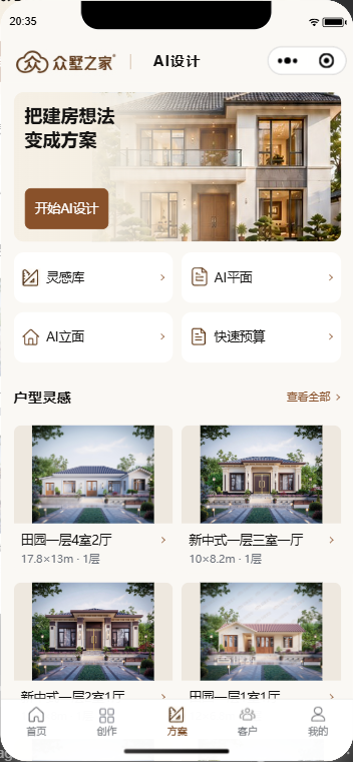
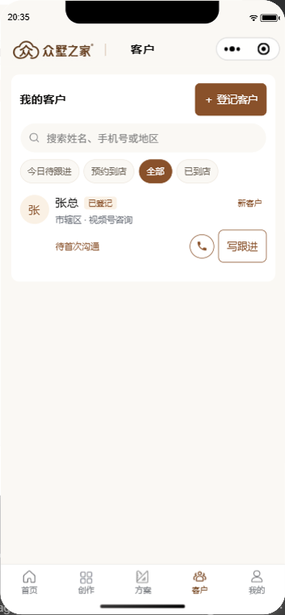
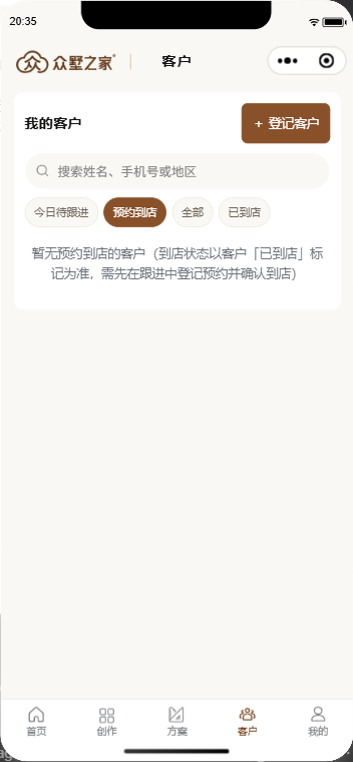
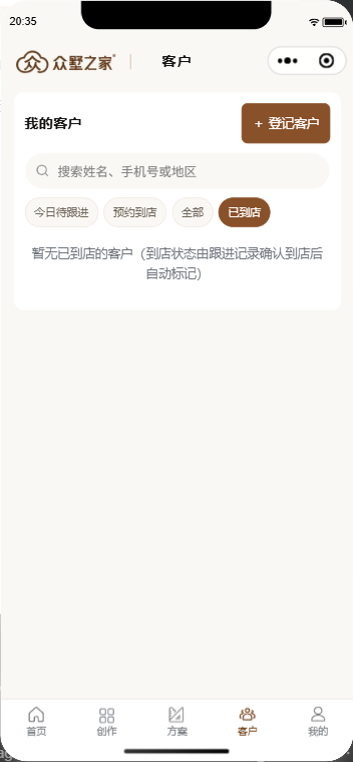
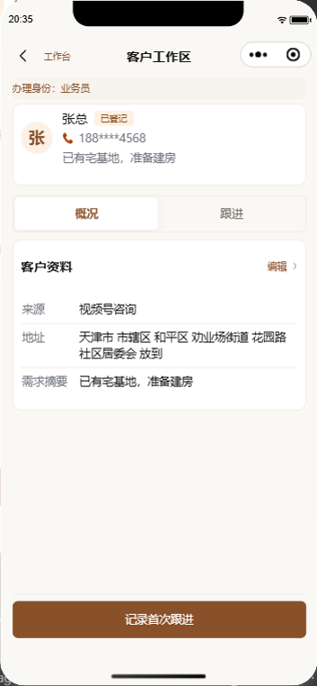
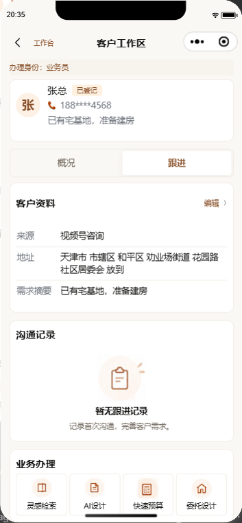
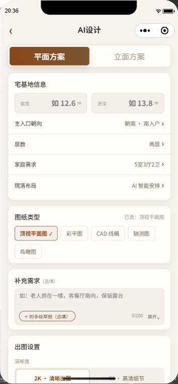
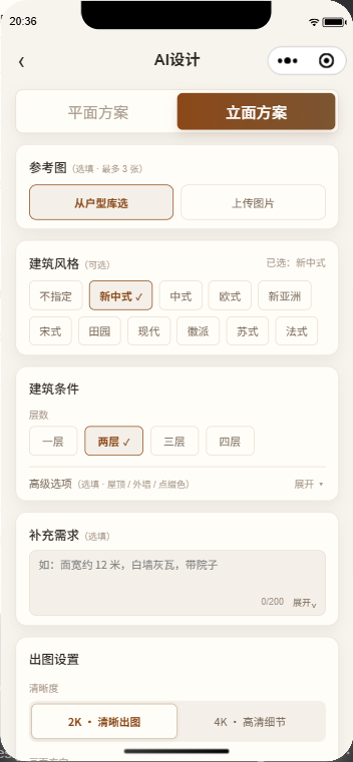
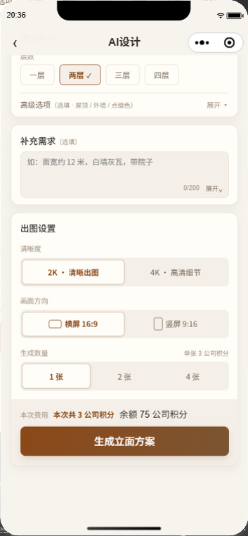
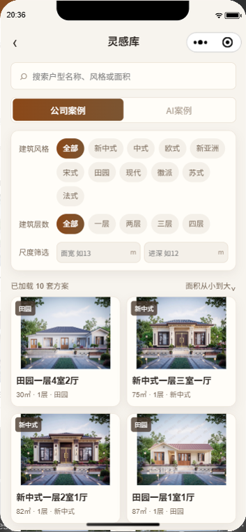
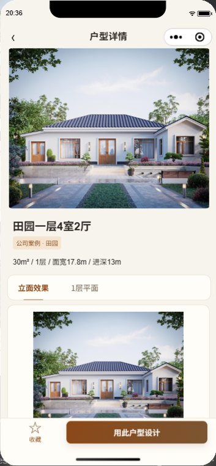
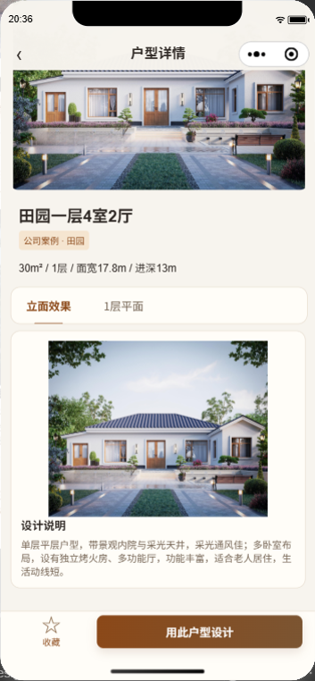
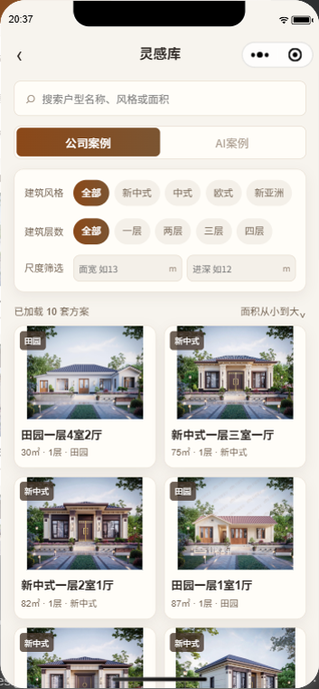
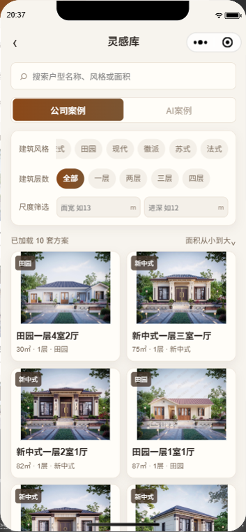
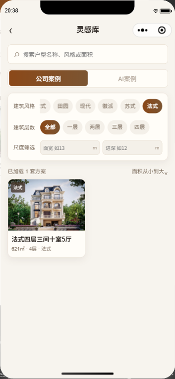
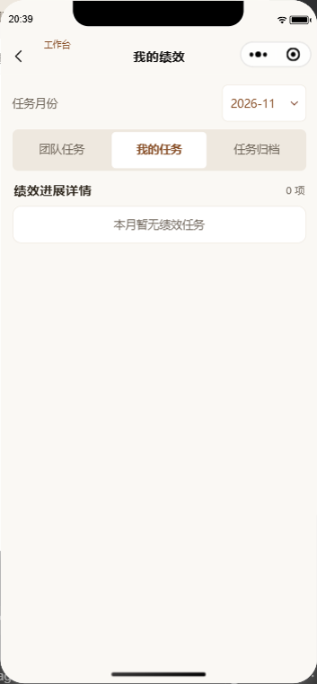
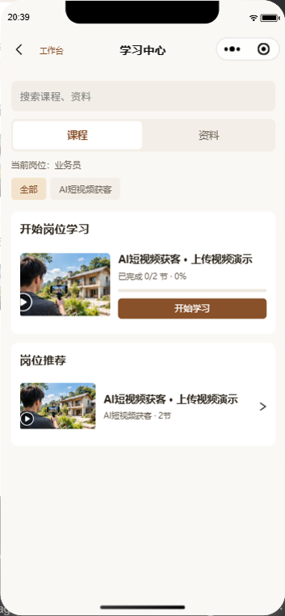
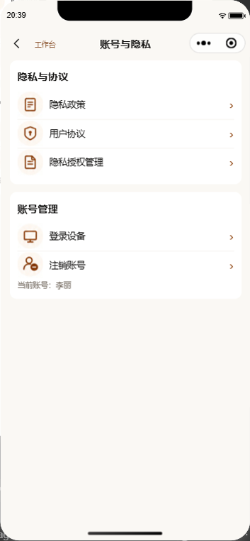
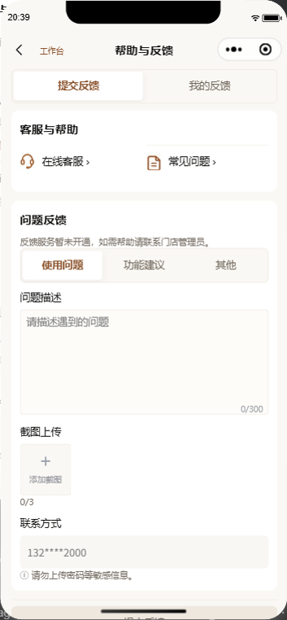
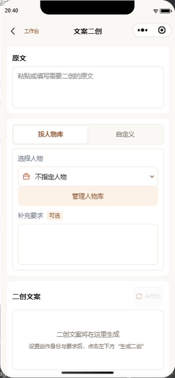
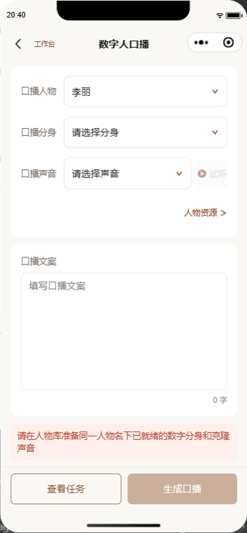
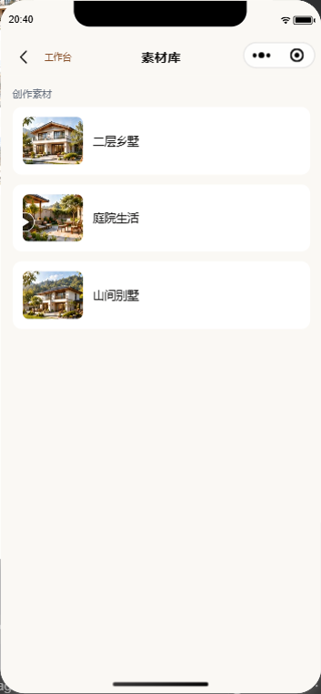
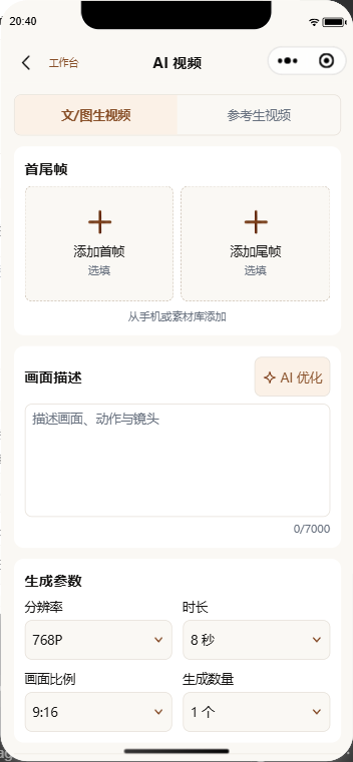
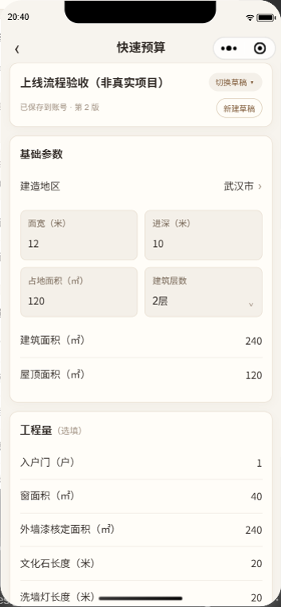
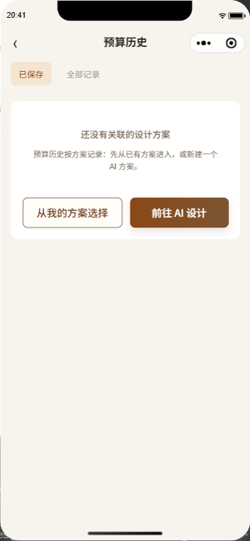
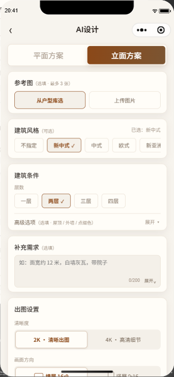
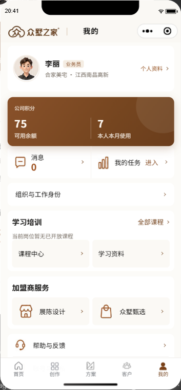
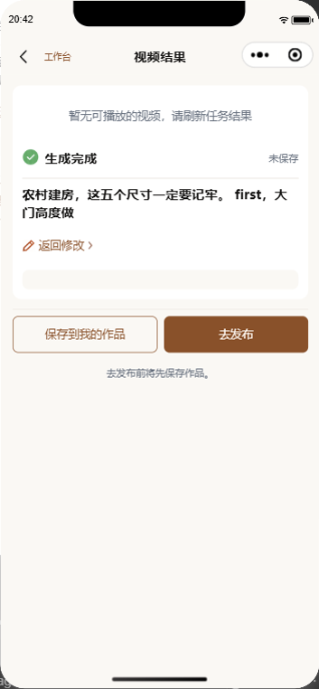
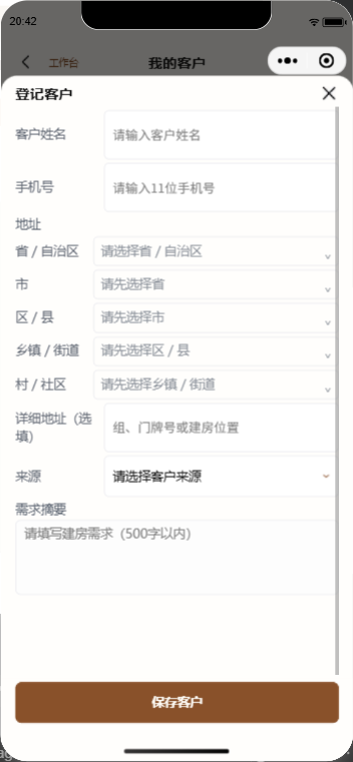